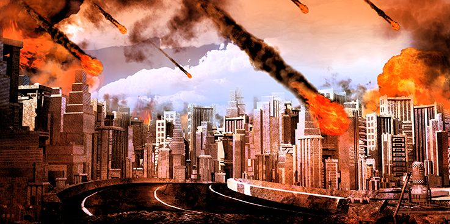

Um dos versículos mais dramáticos da Bíblia foi traduzido pelo Dr. Moffett nestas palavras: "Mal sobre mal, diz o Senhor, o Eterno... está chegando, a hora está batendo, e batendo em você, a hora e o fim. Sua condenação chegou." Ezequiel 7:5-7.
Com base neste texto surpreendente, nossa atenção é atraída para a mensagem mais solene já ouvida pelos ouvidos humanos. É um aviso para cada pessoa viva neste planeta hoje, porque cada indivíduo deve passar por sua última noite na Terra. Como será começar a viver essas últimas 24 horas do tempo?
Talvez você tenha ouvido falar sobre a cidade de Pompéia, que se aninhava na sombra do Monte Vesúvio na velha Itália há muito tempo. Em 79 d.C., aquela montanha simplesmente explodiu com fúria vulcânica e milhões de toneladas de lava derretida caíram sobre Pompéia para inundá-la completamente, exterminando todos os seus habitantes. Um amigo meu caminhou sobre as cinzas endurecidas e a pedra-pomes que ainda cobrem as ruínas escavadas daquela cidade antiga. Ele descreveu as posturas contorcidas das vítimas cujas formas foram perfeitamente preservadas ao moldar o espaço ocupado por seus corpos em decomposição.
Muitas vezes pensei: "Se as pedras da rua pudessem falar, que história elas teriam para contar sobre aquela última noite na terra para Pompéia." A coisa toda parece surgir diante de mim enquanto penso sobre isso agora. A experiência de uma cidade inteira cheia de pessoas, ultrapassadas sem aviso e lançadas na eternidade, estivessem elas prontas ou não. Como será quando você e eu enfrentarmos essa mesma experiência? Será que nos encontraremos apegados aos mesmos velhos pecados que muitos deles estavam obviamente cometendo enquanto eram levados pelo dilúvio repentino da morte?
Sem dúvida, muitos em Pompéia ouviram aquela explosão inicial e tiveram tempo de olhar para cima para ver a parede aterrorizante de lava pouco antes de ela os engolir. Não sabemos nada sobre seus pensamentos, mas as posições físicas gráficas de seus corpos revelam que o pecado havia se tornado uma ciência, e poucos, se é que algum, estavam pensando na morte ou no além.
Imagino o que Paulo deve ter sentido quando pregou seu evangelho da graça aos habitantes de Pompéia. Certamente, em sua varredura pelas principais cidades do Império Romano, ele teria visitado aquele centro de vício e má reputação. Mas é altamente improvável que o apóstolo tenha recebido qualquer audiência favorável dos moradores daquela cidade-pecador portuária. Talvez eles o tenham expulsado de imediato, e Paulo teve que sacudir a poeira de seus pés ao partir.
Foi de Pompeia que o General Tito retirou muitos de seus soldados para seu infame ataque a Jerusalém em 70 d.C. Talvez tenha sido um dos cidadãos de Pompeia quem jogou a tocha flamejante que queimou o magnífico templo até suas fundações.
Mas agora aqueles veteranos de guerras estrangeiras retornaram ao seu lugar de origem para viver seus anos de aposentadoria em indulgência desenfreada. Lentamente, a taça da iniquidade enche até a borda, e em uma noite de folia e embriaguez incomuns, o anjo da morte voa baixo sobre as ruas de Pompéia. Não é difícil imaginar como o chamado final de Deus foi estendido a cada homem, mulher e criança naquela última noite. Antes que o anjo da misericórdia dobrasse suas asas, o Espírito Santo implorou na porta de cada coração. Muito depois que a música e a dança terminaram, as pessoas se reviram em suas camas, lutando com as poderosas convicções da consciência, mas uma a uma essas ternas impressões foram suprimidas e negadas. A voz do Espírito foi abafada pelo clamor carnal por mais excitação e pecado. O destino de Pompéia foi selado.
A Bíblia nos dá outra ilustração impressionante da última noite na Terra no livro de Gênesis. Uma cidade seria eliminada da existência por causa de seu abandono total às perversões da iniquidade. Na véspera de sua destruição, Ló fez uma visita final às suas filhas e seus maridos sodomitas que tinham feito seu lar no meio da cidade condenada. Mas seus apelos urgentes foram ridicularizados como medos infundados. A Bíblia registra que "ele parecia como alguém que zombava de seus genros". Gênesis 19:14. Eles realmente riram do velho enquanto ele chorava por sua despreocupação. Quão diferente teria sido se soubessem que era de fato uma mensagem de julgamento de Deus. Ansiosamente, eles teriam respondido e saído apressadamente de Sodoma se realmente acreditassem que era sua última noite na Terra.
Mas eles não sabiam, e não acreditavam. A maioria de nós nunca reconhecerá quando esse momento fatal se aproxima em nossas próprias vidas. Muitos são arrebatados por acidente repentino e morte sem um segundo de aviso, muito menos um alerta de 24 horas. Mas suponha que você soubesse que tinha exatamente dois meses, ou duas semanas, ou dois dias. Eu ouvi pessoas dizerem: "Oh, se eu tivesse esse conhecimento antes do tempo, eu poderia facilmente desistir de todos os meus maus hábitos e tomar minha decisão de seguir a Cristo completamente." Claro, mas a verdade é que nenhum de nós tem acesso a essa informação, e para muitos que estão lendo estas linhas, a noite passada está muito mais perto do que podemos pensar ou imaginar.
Quão inteligente Satanás é em explorar essa área pessoal do desconhecido em cada um de nós. Ele reconhece bem que a procrastinação é sua arma mais eficaz para fazer as pessoas se perderem. Quanto mais a decisão é adiada, mais fácil é esperar um pouco mais, até que finalmente o processo de adiamento se transforme em um vício letal. A vontade fica cada vez mais fraca à medida que o atraso mina a iniciativa e torna cada vez menos provável que o indivíduo aja antes que seja tarde demais.
A Bíblia tem algumas coisas muito sérias a dizer sobre esse assunto de perseverar no chamado de Deus. Quando Paulo argumentou com Félix sobre justiça e julgamento, somos informados de que o governador tremeu e prometeu chamar Paulo quando tivesse uma "época mais conveniente". Esse momento melhor nunca chegou e, até onde sabemos, Félix desceu a um túmulo sem Cristo no final de sua vida. O rei Agripa também ficou profundamente convicto ao ouvir o testemunho de Paulo sobre Cristo. Ele clamou: "Quase me persuades a ser cristão". Atos 26:28. Que tragédia que, com todo o tremor e convicção, nenhum desses governantes romanos realmente se moveu para obedecer ao que sabiam ser certo. "Quase" não é suficiente.
Às vezes, acontece que indivíduos se deparam com escolhas que devem ser feitas em poucos minutos, o que afetará toda a direção futura de suas vidas. Nessas raras instâncias (e talvez não sejam tão raras quanto pensamos), aquele momento dourado de oportunidade surge em foco, permanece apenas por alguns momentos preciosos e então desaparece para sempre. Parece patentemente verdade que Félix e Agripa enfrentaram a oportunidade mais significativa e favorável de escolher a vida em vez da morte, e eles a desperdiçaram. Eles esperaram muito tempo, e sua convicção desapareceu.
Homens e mulheres fazem a mesma coisa hoje. Eles esperam por circunstâncias mais convenientes - um emprego diferente, aposentadoria ou segurança financeira. Eles fazem promessas a si mesmos e aos outros de que se renderão a Cristo e obedecerão à verdade assim que chegar a hora certa. Outra pessoa - Satanás - ouve essas promessas e imediatamente começa a manipular eventos que tornarão esse momento certo impossível. Essas pessoas continuam esperando e esperando e esperando, e muitas delas estarão esperando quando a água se transformar em sangue e a porta da provação se fechar para a raça humana. Não é de se admirar que a Bíblia declare que "Agora é o tempo aceitável; eis aqui, agora é o dia da salvação." 2 Coríntios 6:2.
Quando o dilúvio veio e a porta da arca se fechou, não importava quão perto ou quão longe uma pessoa estivesse naquele momento. Aqueles que estavam a um pé fora daquela porta estavam tão perdidos quanto aqueles que estavam a quilômetros de distância. Após 120 anos de súplica, o Espírito de Deus foi retirado da terra, a mão de Deus fechou a porta, e o destino de um mundo foi fixado e estabelecido. Isso tem alguma coisa a ver com o que está acontecendo com a progênie daqueles oito sobreviventes da arca hoje? De fato, tem. Porque Jesus disse: "Como foi nos dias de Noé, assim será também a vinda do Filho do homem." Mateus 24:37.
Cristo estava se referindo ao fim dos tempos em que vivemos agora. Ele disse: "Assim será." Há similaridades com a cultura e o estilo de vida antediluvianos? Somos informados de que "toda a imaginação dos pensamentos de seu coração era somente má continuamente." Gênesis 6:5. Essa avaliação do homem antes do dilúvio corresponde à imagem pervertida dos descendentes modernos de Noé?
Para a resposta a essa pergunta, consulte seu jornal matutino e o guia de TV local. A iniquidade é galopante. O crime está fora de controle. Terroristas atacam em lugares inesperados. Ninguém questionaria que a imaginação maligna marca a era atual com sua colheita de violência e ilegalidade.
Há também evidências de que o Espírito Santo está lutando com os corações humanos e confrontando multidões com seu convite final de misericórdia? Como evangelista, posso testemunhar que há uma controvérsia furiosa girando em torno de cada alma viva. Alguns que estão lendo estas palavras estão prestes a tomar uma decisão que pode significar vida ou morte e, ao mesmo tempo, Satanás joga com seus medos infundados para tentar impedi-lo de um compromisso total. Você está sendo tentado, como Félix, a esperar por uma estação mais conveniente, mas isso nunca chegará. Permanecer agora é se tornar parte da vasta maioria que foi destruída no dilúvio e que representa aqueles que não estarão preparados quando Jesus voltar.
Pense por um momento no que teria acontecido no Rio Jordão se os sacerdotes tivessem hesitado em seguir adiante ao comando do Senhor. O Rio Jordão estava em fase de cheia (Josué 3:15), e suas águas furiosas haviam transbordado suas margens e estavam furiosas. O rugido de suas águas correndo ressoava contra o céu.
Mas os 40 anos no deserto terminaram e, por ordem de Deus, Josué disse aos sacerdotes para liderarem aquela hoste de milhões através do Rio Jordão e se prepararem para possuir a terra de Canaã.
Eles deveriam entrar direto na água rugindo e confiar em Deus para proteger Seu povo. Suponha que aqueles sacerdotes tivessem pressionado por uma reunião do comitê para discutir o comando radical de marchar com todo o acampamento em direção a uma aparente armadilha mortal. O povo já estava nervoso com o rugido rodopiante da água. Qualquer hesitação por parte dos sacerdotes poderia ter causado pânico no povo e se recusado a seguir em frente. Tudo estava em jogo. Os cananeus estavam observando. Qualquer sinal de medo aqui poderia tê-los levado a atacar o povo de Deus.
Quando os sacerdotes chegaram à beira da água, ela não se abriu. Parecia suicídio pisar naquelas perigosas águas de inundação. Mas os sacerdotes continuaram andando até que mergulharam direto na água (Josué 3:15). Então as águas pararam de fluir imediatamente, e todo o acampamento atravessou para Canaã em terra seca.
Você está parado perto das águas tempestuosas do Jordão hoje? Há 1.000 razões pelas quais parece loucura você tomar a decisão de seguir em frente. Isso significa uma entrega completa de toda a vida e uma disposição de seguir em frente em obediência - independentemente das consequências. Não é fácil. Você está dizendo: "Abra o caminho e eu seguirei em frente"? Mas o plano de Deus é exatamente o oposto. Ele diz: "Você vai em frente e eu abrirei o caminho" (Mateus 6:33). Os milagres acontecem quando seguimos em frente pela fé.
Estou feliz que alguém na frente da fila teve fé forte quando Moisés deu as ordens para seguir em frente no mar, e tão certamente quanto as águas se abriram sob seus pés, assim as circunstâncias proibitivas desaparecerão à medida que o povo de Deus hoje avança em obediência a Ele. É interessante notar que o próximo movimento cabia ao povo nos dias de Moisés, e o mesmo é verdade para aqueles que se afastaram da escravidão espiritual. Deus não pode e não tomará a decisão por nós, mas assim que dermos o primeiro passo em obediência, Ele nos encherá com o poder de superar todos os obstáculos.
Alguns podem objetar que estou pressionando muito aqueles que estão se demorando na zona de penumbra da indecisão. Você pode se ofender com meu forte apelo para que você aja rapidamente para seguir Jesus. Mas, por favor, lembre-se de que estou me dirigindo àqueles que podem estar vivendo sua última noite na Terra. Não acredito que seja possível obedecer a Deus muito rapidamente e, de alguma forma, não acho que alguém vá me repreender no céu porque fiz o chamado a eles de forma clara, concisa e urgente. Estou muito sério sobre isso porque vi os resultados de esperar muito tempo.
Eu poderia encher este livro com histórias emocionais daqueles que adiaram a rendição até que seus corações estivessem frios e sem resposta. Além disso, eu poderia dar nomes e lugares para onde os participantes noturnos das reuniões da cruzada foram levados em um momento por acidente repentino ou morte. Vez após vez, eu fiz apelos por decisão, sem perceber que havia pessoas na plateia ouvindo seu último convite para serem salvas.
Mas por que é que tão poucos respondem a esses chamados para a rendição? Por que alguém precisaria ser implorado para entrar na gloriosa salvação de nosso Senhor? Quero responder a essas perguntas de uma forma que você nunca se esqueça. Até mesmo Jesus confirmou que apenas alguns estariam dispostos a seguir o caminho estreito para o céu. A maioria escolheria o caminho largo da morte, onde a grande maioria estaria viajando.
Então temos aquela declaração chocante do Mestre à qual já nos referimos: "Como foi nos dias de Noé, assim será também a vinda do Filho do homem." Mateus 24:37. Quantos foram salvos naqueles dias do desastre global? Apenas oito tiveram fé na palavra de Deus para serem encerrados naquela monstruosidade de um barco. Eles foram os únicos sobreviventes. Haverá algum tipo de número proporcional poupado "nos dias do Filho do homem"? Todos concordam que isso está falando sobre o fim do mundo e a vinda de Jesus.
Ouvi a declaração: "Oh, se eu tivesse vivido naqueles dias, teria entrado na arca com o fiel Noé." Como é fácil dizer o que teríamos feito sob certas condições do passado. Outros falaram sobre os nobres mártires que morreram por sua fé durante a Idade das Trevas e declararam com grande segurança que teriam alegremente entregado suas vidas pela causa da verdade também.
Agora, pode ser verdade que alguns teriam morrido por sua fé, mas poucos têm alguma noção do que significava defender Cristo durante aqueles dias terríveis. Aqueles homens e mulheres corajosos que foram queimados na fogueira, jogados aos animais selvagens ou torturados em masmorras medievais poderiam ter salvado suas vidas com um simples movimento de mão. Na maioria dos casos, eles receberam anistia e liberdade imediata se sinalizassem sua disposição de renunciar à sua fé. Então a escolha era muito clara enquanto observavam os gravetos secos sendo empilhados ao redor deles. Eles poderiam sufocar no meio da fumaça e das chamas punitivas ou então caminhar de volta para o conforto do lar e da família. Milhões incontáveis escolheram a morte heróica, mas horrível, em vez de negar seu Salvador.
Quantos cristãos que você conhece têm esse tipo de fé e amor abnegados? Quais teriam seguido os mártires até a fogueira ou a arena? Alguns poderiam, se tivessem vivido naqueles dias. Mas de uma coisa podemos ter certeza: somente aqueles que prefeririam morrer agora do que quebrar a santa lei de Deus teriam se mostrado leais a Ele durante aqueles anos de severa perseguição.
Infelizmente, vivemos em uma era fácil e permissiva, onde a autonegação está decididamente fora de moda. A verdade se tornou muito negociável no clima ecumênico relaxado da religião contemporânea. O pluralismo se tornou tão aceitável que os candidatos a membros recebem uma ampla gama do que podem acreditar ou não acreditar. Muito poucas, se houver, questões de doutrina são consideradas importantes o suficiente para sequer lutar por elas, muito menos morrer por elas. Há exceções notáveis, é claro, mas elas são frequentemente encontradas fora dos contornos confortáveis do chamado Ocidente cristão.
Por exemplo, toda vez que ouço as pessoas darem desculpas para não irem até o fim com Jesus, penso em Saddiq. Foi em 25 de dezembro de 1955 que respondi às furiosas batidas na minha porta em Lahore, Paquistão. Um aldeão muçulmano vestido tipicamente passou correndo por mim e entrou na casa, gritando: "Batize-me rapidamente! Batize-me agora!" Depois de se acalmar um pouco, o homem começou a contar uma história incrível. Seu nome era Saddiq e ele vivia nas áreas tribais do Passo Khyber, perto da fronteira com o Afeganistão, onde havia pouco ou nenhum controle governamental. A lei muçulmana era investida em cada homem que possuía uma faca, um machado ou uma arma.
Saddiq tinha um bom emprego e uma família maravilhosa, e também era um muçulmano fiel que orava cinco vezes por dia em direção a Meca. Mas recentemente ele começou a ouvir um amigo meu evangelista que estava realizando uma reunião em tenda na área. Todas as noites, no caminho de casa do trabalho, Saddiq ficava do lado de fora nas sombras absorvendo as verdades emocionantes do evangelho. Ele não ousava entrar por medo de ser morto como um infiel, e quando os apelos ao altar eram feitos, Saddiq só conseguia se comprometer em seu coração a seguir Jesus.
Mais tarde, ele confidenciou à esposa que se tornaria cristão. No dia seguinte, ele voltou do trabalho e encontrou sua casa vazia. Seu sogro havia levado tudo e todos de casa. Ele nunca mais veria sua esposa e filhos. Poucos dias depois, ele foi demitido do emprego, pois parentes intervieram contra ele. Então, ele foi assaltado por membros de sua própria família e espancado quase até a morte. Fugindo para salvar sua vida, Saddiq veio para a cidade movimentada de Lahore e procurou alguém que pudesse ajudá-lo a terminar a jornada do islamismo para o cristianismo. Fiquei feliz em ajudar. Enchemos o batistério e enterramos aquele homem corajoso com seu Senhor naquela tarde de Natal.
Eu vi as cicatrizes no corpo de Saddiq quando ele saiu da água - marcas de devoção e sacrifício que ele carregará pelo resto da vida. Ele também será um refugiado e fugitivo da ira de seus próprios parentes enquanto viver. Qualquer um que o encontrar considerará um dever matá-lo.
Penso frequentemente em Saddiq quando estou realizando uma série evangelística, e a maioria do público foi convencida pelas mesmas verdades que meu irmão Saddiq aprendeu fora da tenda há tanto tempo. Mas nem todos respondem da mesma forma que ele. Nenhum deles enfrenta a perda de filhos ao longo da vida, a ameaça constante de morte ou a extrema perseguição física que seguirá Saddiq pelo resto de seus dias na Terra. Alguns, porém, estão sendo testados pela possível perda de alguns dólares e talvez até mesmo alguns amigos. Eles se retraem e reclamam das dificuldades e sacrifícios envolvidos na tomada da decisão pelo batismo. A verdade é que não sabemos o que são a verdadeira abnegação e sacrifício. A menos que estejamos prontos para dar nossas vidas pela causa da verdade, não somos dignos do reino dos céus.
Às vezes ouvimos santos fervorosos declararem: "Se eu tivesse vivido nos dias de Jesus, eu teria sido um de Seus seguidores." Mas sabemos o que estava envolvido em tal alinhamento aberto com Jesus de Nazaré? Independentemente de seu status, as pessoas eram expulsas da sinagoga imediatamente. Isso significava que elas eram boicotadas em seus negócios, deserdadas de suas famílias e consideradas mortas por todos os seus amigos. Alguns realmente teriam feito essa escolha se tivessem vivido na Palestina há 2.000 anos? Sim, mas apenas aqueles que prefeririam morrer do que pecar em sua situação atual teriam saído para seguir o humilde Nazareno naquela época.
E seria o mesmo para os dias de Noé? Já aprendemos que apenas oito estavam dispostos a arriscar a censura e o ridículo de ser um membro da igreja do barco de Noé. Quantos santos modernos teriam ousado tomar uma posição pública pelo projeto ultrajante de construir um enorme navio na encosta de uma colina seca? Provavelmente nenhum outro grupo religioso na história mundial sofreu mais publicidade negativa do que Noé e sua família.
Sempre foi fascinante para mim que Noé provavelmente contratou ajudantes para construir a arca, e eles pereceram mais tarde porque rejeitaram os próprios meios de salvação nos quais investiram grande parte de suas vidas. E essas eram as pessoas que tinham a maior razão para acreditar que um dilúvio estava chegando. Dia após dia, eles ouviam a mensagem sincera do velho patriarca enquanto ele implorava a parentes e amigos para se aproveitarem dessa forma de escape. A Bíblia chama Noé de "pregador da justiça" (2 Pedro 2:5), o que indica que ele pode ter passado mais tempo pedindo decisões do que pregando pregos na arca.
Como podemos explicar a incrível resistência aos poderosos apelos cheios do Espírito de Noé e seus filhos? Parece quase um exemplo clássico de influência majoritária. O medo de ser diferente levou muitas pessoas sinceras a rejeitar, de imediato, o apelo da consciência e do bom senso. Isso aconteceu nos dias de Noé e ainda acontece hoje. Preconceito e emoção, uma vez despertados, têm uma influência maior na decisão do que toda a verdade lógica do mundo. Nenhum dos antediluvianos poderia negar a evidência persuasiva daqueles animais marchando dois a dois e sete a sete para dentro da arca concluída, mas a multidão zombeteira os lembrou do custo da não conformidade. Eles não ousaram ser diferentes e mostrar qualquer apoio ao pequeno grupo impopular de destaques religiosos.
Tentei imaginar a dinâmica daquele último apelo que Noé fez à multidão de curiosos. Os sons da construção cessaram, e as ferramentas foram colocadas fora de vista. Os animais estão todos seguros a bordo, e a família de Noé terminou de transferir todos os seus pertences para o enorme navio sem janelas. De todos os sermões que já foram pregados na história do homem, este é o que eu preferiria ouvir. O drama deste momento foi capturado por nosso Senhor Jesus quando Ele disse: "Como foi nos dias de Noé, assim será também a vinda do Filho do homem."
Outro último chamado - outro sermão final, por favor - será dado aos habitantes condenados desta era igualmente perversa. Desta vez, a destruição não será pela água, mas pelo fogo. No entanto, há um terrível paralelo entre a mensagem urgente de Noé e a dos fiéis que darão o alto grito de alerta de que o mundo está prestes a ser destruído novamente.
Jesus descreveu a indiferença com que essa mensagem será recebida. "Eles comiam, bebiam, casavam e davam-se em casamento, até o dia em que Noé entrou na arca, e veio o dilúvio e os destruiu a todos." Lucas 17:27. Que comentário sobre o efeito paralisante do pecado! As pessoas continuam, negócios como sempre, enquanto os últimos momentos de provação passam.
Algum outro pregador operou sob o estresse emocional que constrangeu Noé naquele dia? Ele estava totalmente ciente de que em poucos momentos a porta atrás dele se fecharia para sempre em qualquer esperança de salvação para a raça humana. Somente as palavras deste sermão final poderiam fazer a diferença para qualquer alma viva. As Escrituras indicam que Cristo, pelo Espírito Santo, estava pregando por meio de Noé aos espíritos daquelas pessoas presas ao pecado (1 Pedro 3:18-20).
Tenho certeza de que havia lágrimas na voz de Noé e em suas bochechas enquanto ele implorava para que se juntassem a ele na arca. Muitos na plateia eram vizinhos de longa data, e talvez Noé até os chamasse pelo nome enquanto pressionava seu apelo por decisão. Uma convicção solene manteve a multidão imóvel enquanto o velho parou para enxugar os olhos. Então, houve uma agitação inquieta quando alguns começaram a se aproximar como se fossem se juntar ao pequeno grupo, mas foram imediatamente atraídos de volta pelas mãos de parentes ou amigos.
Não posso entrar totalmente nos sentimentos de Noé quando ele se virou para se juntar à sua família na arca pela última vez, mas tenho uma forte afinidade com ele naquele último chamado solitário que ele estendeu à multidão. Eu senti isso toda vez que encerro uma cruzada e faço o convite final. Eu sempre conheço pessoalmente indivíduos naquela audiência que estão lutando contra o Espírito de Deus. Eles acreditam na verdade, tremem de convicção e são quase persuadidos a se apresentar. É assim que deve ter sido com Noé quando ele se virou para implorar apenas mais uma vez. Mas finalmente ele teve que encerrar a reunião e caminhar, chorando, pela porta aberta. E de repente aquela porta começou a se mover em suas dobradiças e, em segundos, ela se fechou com um baque sólido.
Houve gritos nervosos de alguns quando a porta se fechou, e então, um balbucio de conversa animada. "Meu Deus, você já ouviu algo assim na sua vida?" uma voz se sobrepôs às outras. "Você acha que ele realmente poderia estar certo sobre uma inundação?" perguntou outro. Mas, então, houve uma forte discordância, e alguns estavam apontando para o céu sem nuvens para afirmar em voz alta o que tinha sido ouvido repetidamente desde que o projeto da arca começou, "Nunca choveu, e essas pessoas são fanáticas selvagens para acreditar em tal tolice."
Por dois ou três dias, a apreensão continuou a dominar a comunidade, especialmente quando passavam pela arca bem fechada todas as manhãs a caminho do trabalho. Mas no meio da semana parecia óbvio para todos que a previsão de Noé estava totalmente errada, e mesmo aqueles que estavam profundamente comovidos com a convicção ficaram envergonhados com sua antiga preocupação. Para cobrir seu desgosto, alguns deles começaram a fazer comentários zombeteiros para qualquer um que quisesse ouvir. No sétimo dia, nenhum sentimento simpático foi encontrado favorecendo a família enclausurada.
E então aconteceu! Nuvens pareciam surgir do nada, e gotas de chuva começaram a respingar na terra faminta. Gritos e berros rasgavam o ar enquanto homens, mulheres e crianças fugiam em direção a qualquer abrigo disponível. Mas então a água estava jorrando em torrentes dos céus, e de enormes rachaduras cavernosas no solo. Aqueles que conseguiam lutar para níveis mais altos eram rapidamente subjugados e arrastados para a morte, enquanto a grande arca de cipreste flutuava gentilmente e com segurança nas ondas crescentes.
"Como foi nos dias de Noé, assim será nos dias do Filho do homem." Alguns fiéis, considerados tolos e fanáticos, mas corajosos o suficiente para seguir a verdade impopular e proclamar um aviso especial de que o fim está próximo, serão salvos. Você já ouviu isso? Você entendeu a lição que nosso Senhor estava ensinando no sermão de Noé? "Como foi... assim será." Sem se, e ou mas - "Assim será." A última noite na terra chegará para todos quando os céus se abrirem, e a gloriosa comitiva de anjos fornecer uma deslumbrante autoestrada de esplendor para o Rei dos reis e Senhor dos senhores. Será inesperado, e será tarde demais para aqueles que esperaram até que a porta da misericórdia se fechasse.
Assim como a provação do mundo antediluviano terminou sete dias antes do dilúvio, assim a provação do planeta encerrará sete pragas antes que Jesus apareça. Durante essas desoladoras sete últimas pragas do fim dos tempos, a Bíblia diz que ninguém pode entrar no templo no céu (Apocalipse 15:8). Não haverá intercessor pela raça humana. O grande decreto terá sido divulgado: "Quem é injusto, faça injustiça ainda; e quem é sujo, suje-se ainda... e quem é santo, santifique-se ainda. E eis que cedo venho." Apocalipse 22:11,12
Milhões estão esperando na vã esperança de que algum evento especial sinalize que eles podem rapidamente fazer a preparação necessária para encontrar o Senhor que retorna. Como Félix, eles pretendem tirar vantagem dessa "temporada mais conveniente". E enquanto eles permanecem, seus corações endurecem e suas vontades mais indecisas. Eles perdem a preciosa habilidade de julgar suas próprias necessidades, ou discernir os sinais panorâmicos do fim.
Durante a escavação das ruínas de Pompéia, eles encontraram os restos mortais de uma mulher que aparentemente estava correndo do rio de lava ardente que descia pela encosta do Monte Vesúvio. Agarrados em suas mãos ossudas e esqueléticas estavam dois brincos de joias. Não foi difícil descobrir exatamente o que havia acontecido na experiência daquela mulher. Era óbvio que ela havia sido alertada sobre a destruição que se aproximava e havia corrido de volta para casa para salvar as bugigangas em suas mãos. Mas a demora tornou impossível escapar do fluxo da morte, e ela foi alcançada e enterrada sob a lava.
Deixe-me fazer uma pergunta. O que havia de errado com aquela mulher? Onde ela cometeu seu grande erro? A resposta é fácil. Ela pensou que tinha mais tempo do que realmente tinha. Esse é o mesmo erro que a maioria dos seres humanos está cometendo hoje, à medida que o holocausto da destruição se aproxima. Não há um indivíduo não batizado e não comprometido no mundo que não esteja cometendo esse erro. Eles querem ser salvos e pretendem fazê-lo algum dia, mas calculam que ainda há muito tempo.
Você é alguém que vem adiando o dia da decisão, aquela entrega irrestrita da sua vontade? Por favor, deixe-me falar com você por um momento. Há uma pequena chance de que você esteja certo e que terá outra oportunidade - mas é apenas uma chance! Há outra chance de que você esteja completamente errado. Você está apostando na salvação da sua alma. Você está jogando um jogo mortal de roleta russa sobre a vida eterna. A cada dia que passa, as apostas aumentam mais e mais, e suas chances de ganhar se tornam cada vez menores. As cartas estão contra você. Por que apostar que terá outra chance no futuro? Você não precisa apostar. Você tem uma chance agora.
A porta da arca ainda está aberta, e é só um passo para dentro. Por que não resolver a incerteza neste exato momento? Entregue sua vontade e diga Sim ao amoroso Salvador, que anseia por lhe dar Sua paz e segurança.